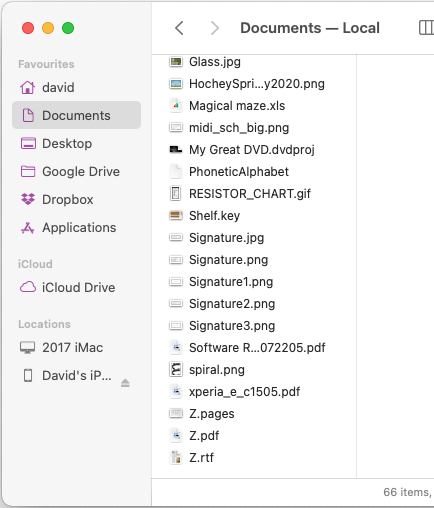
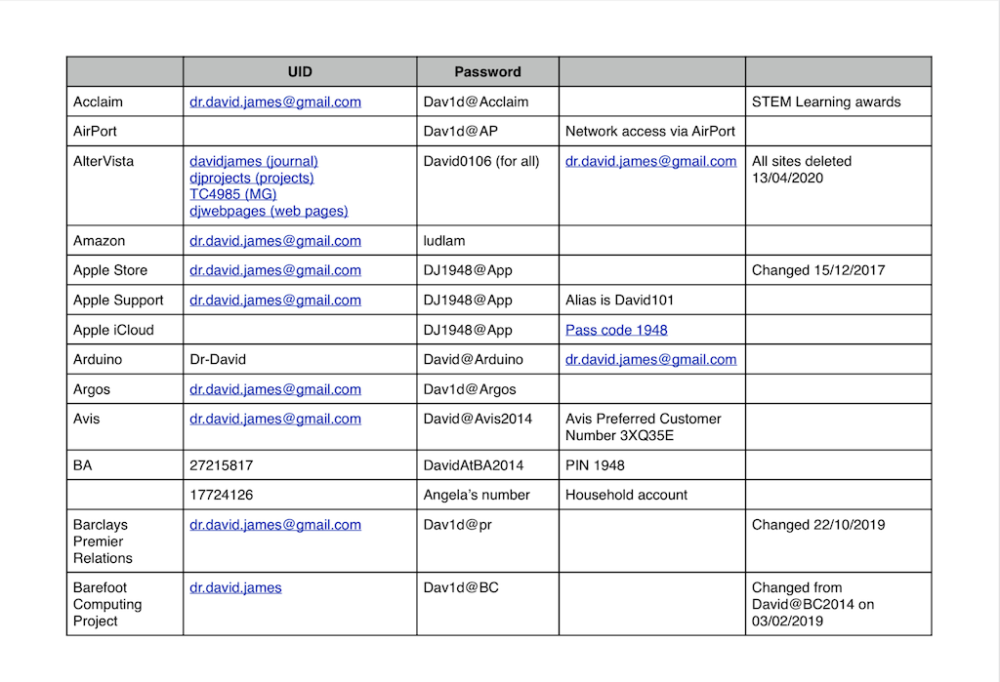
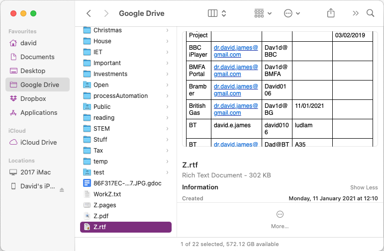
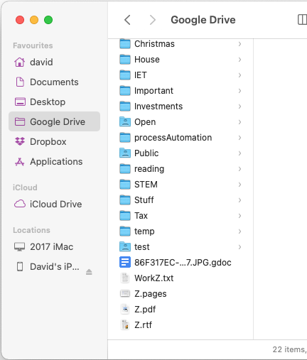
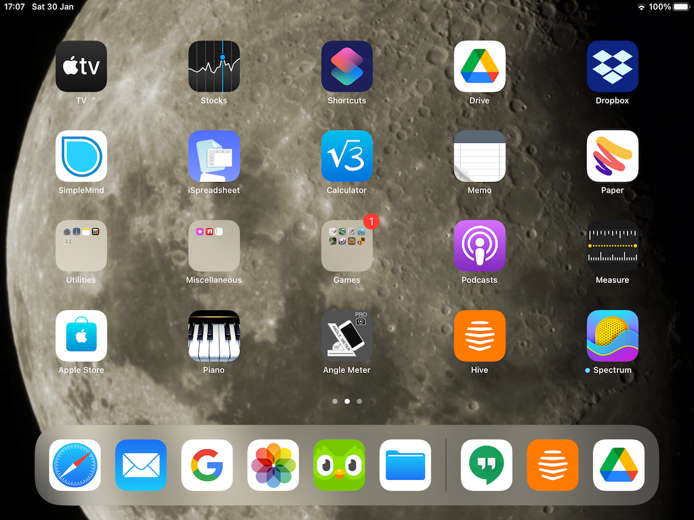
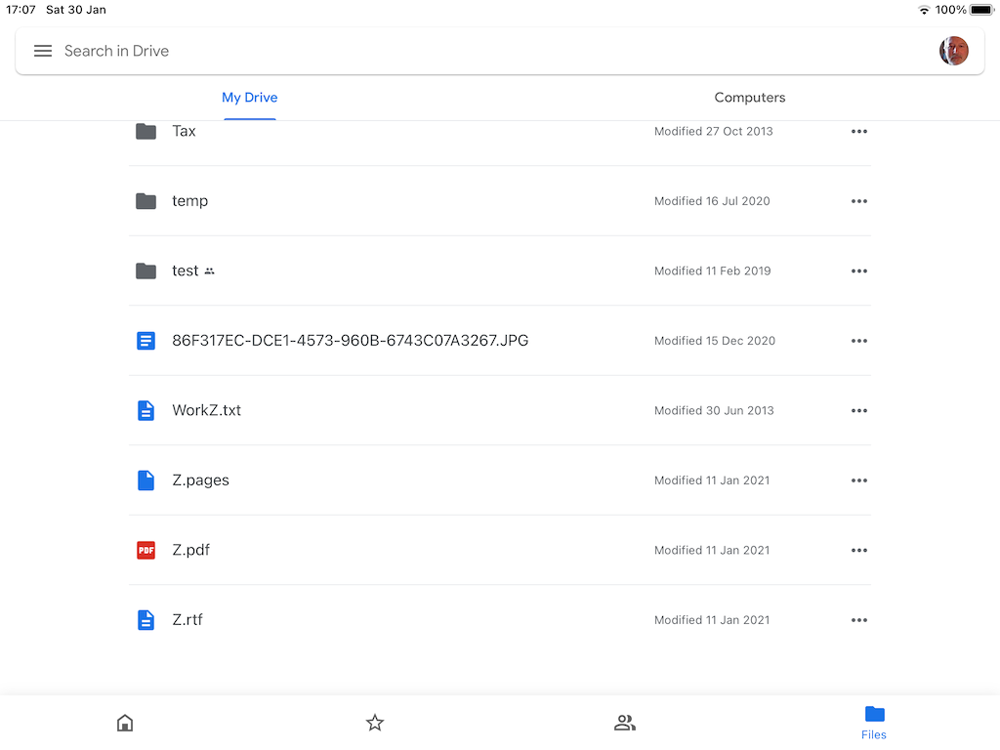

Access to most online services requires the entry of a password, which are pretty well impossible to remember. So in spite of the general guidance, they are all written down in one place or another. There are a number of tools available that will store passwords for you so that you only need to remember one; the one that gets you into the tool. But at the time of writing we don't use such a tool and passwords and related security data are kept in a number of places, depending upon the importance of the information or service that the password protects. This 'how to' explains how to find the password that you need.
Firstly, let's list the places where passwords are kept and then describe how to get at those stored electronically.
So let's look at how to access the security information kept in the 'Z' files. There are several ways of doing this, depending upon the device that you are using, as described below.
There are two quick methods of finding a password on the iMac; viewing the Z.pdf file or looking at the Z.rtf file in Finder.
Firstly, looking at the pdf file. When you open Finder it will start in the Documents folder, which is held locally on the iMac's hard drive. Scroll down and near the bottom you will see Z.pdf. Double click on the file name and the pdf file will open in Preview. The entries are in alphabetical order, so you can scroll down to find the entry you want. The first column is the user ID, the second is the password and other columns have any related security information.
The other, quicker, but less easy to use, method is to open Finder, scroll down and click on the Z.rtf file. You will see the contents of the file in the right-hand pane of Finder. In fact, you can scroll through that file in Finder until you find the entry that you want.
The process is very similar on the MacBook, except that you will not find the files in the Documents folder. Remember, this folder is stored on the local hard drive, so is showing what is stored on the MacBook. However, you can find the files by selecting Google Drive and scrolling to the bottom. You then have the same two options as described for the iMac.
Finding password information on the iPad or iPhone is essentially the same as for the MacBook in that you need to view the contents of Google Drive. If you have Safari open and are trying to log in to one of the sites, you can press the Home button to go back to the start screen. If you then move to the second screen on the iPad (by swiping to the left) you will see the Drive icon (with a multi-coloured triangle).
Tap that and you will open Google Drive on the iPad. By scrolling down (swipe up) you will see the Z.pdf file. Tap that and the file will open. You can then scroll down to find the password you want.
Remember that you can go back to the login screen on Safari by pressing the Home button twice and tapping on Safari.
To update security information in these three files it is necessary to open Documents/Z.pages in Pages on the iMac, edit the file, save it and then File-Export to pdf and then to rtf, replacing the original files. All three files are then copied to Google Drive.
Passwords are a pain, but hopefully you can now find the one you want either on paper, on the iMac or the iPad.
© David James 2021 Last updated: 31st January 2021